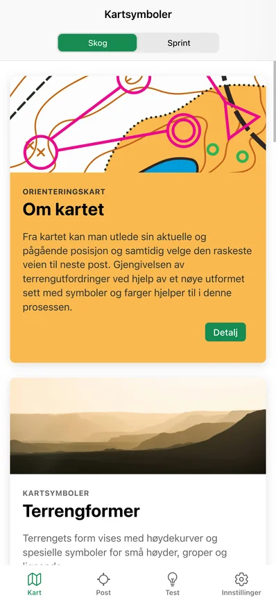
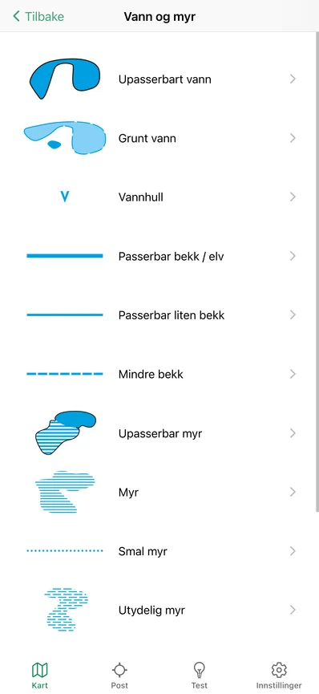
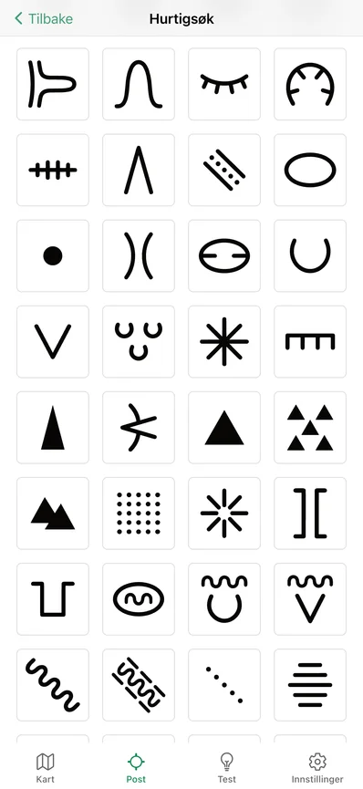
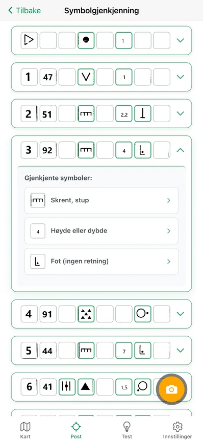
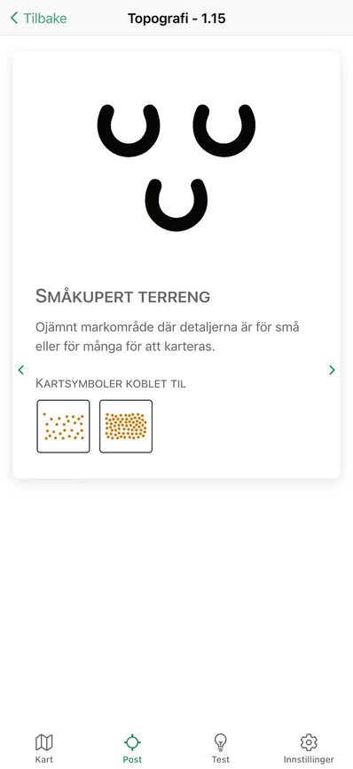
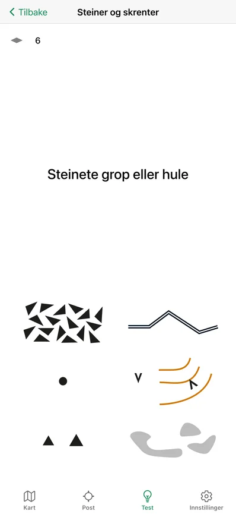
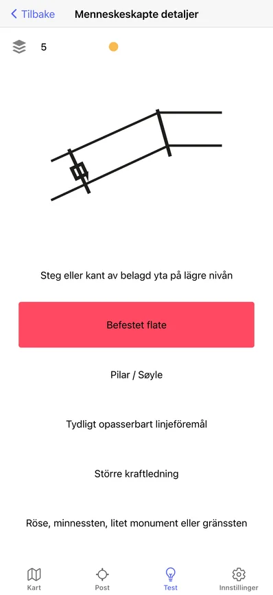
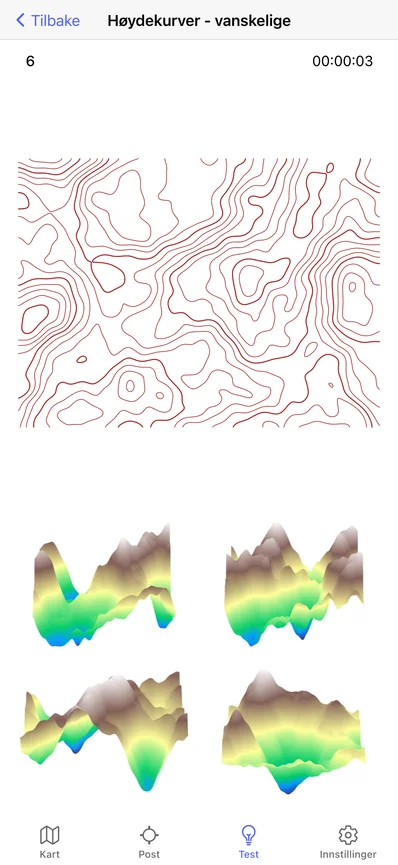

Orisym
Orienter deg med oversikt
Opplæring, testing og katalog over symboler for orientering










Hvorfor Orisym?
- Du lærer betydningen av hvert symbol for orientering i detalj
- Ved testing av kunnskapene dine finner du ut hvor du står, og forbedrer dem
- I katalogen over kartsymboler og symboler for plassering av poster finner du detaljerte beskrivelser av deres betydning
- Du oppdager sammenhengen mellom begge typer symboler og deres relasjoner
- Du forbedrer din romlige orientering ved å gjenkjenne terreng fra høydekurver
- Appen trenger ikke internett – den fungerer offline